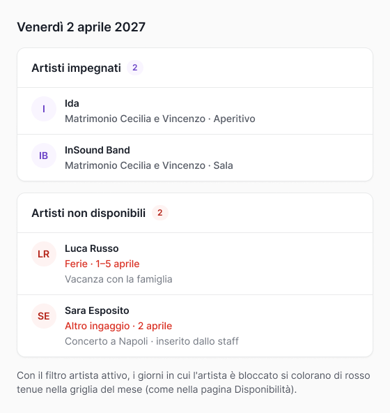

Può leggere
- Eventi, con cast, musica e contratti
- Calendario, appuntamenti ed eventi interni
- Artisti e loro disponibilità
- Clienti, location, chiese e service
- Finanze, solo per il titolare
Le chat degli eventi non le legge.

In arrivo
Collegherai Claude, ChatGPT o un altro assistente a Quinte. Lavora con i tuoi permessi: legge e prepara, tu confermi.

Quali violinisti sono liberi sabato 13 giugno?
Quinte si collegherà agli assistenti che supportano i connettori MCP, come Claude e ChatGPT. Per collegarlo usi lo stesso login del gestionale.
Aggiungi Quinte tra i connettori del tuo assistente ed entri con le credenziali che usi già.
Scrivi la domanda come la faresti in ufficio. L'assistente cerca la risposta nei dati di Quinte che tu puoi vedere.
Se gli chiedi di inserire qualcosa, lo prepara e lo lascia da confermare. L'ultima parola è di una persona dello staff.
Quelle che oggi ti costano un giro tra calendario, fogli e telefonate.
Quali violinisti sono liberi sabato 13 giugno?
Quanto devo ancora incassare questo mese?
Dimmi tutti gli eventi della prossima settimana.
Quali eventi di maggio hanno artisti che non hanno ancora confermato?
Dimmi gli eventi del nostro sassofonista a giugno e il suo cachet totale.
Aggiungi una spesa di 300 euro per le bollette.
L'assistente agisce come chi lo usa, con gli stessi permessi del suo ruolo. Non vede niente che tu non possa già vedere.
Le chat degli eventi non le legge.

Tutto resta Da confermare
L'assistente ti risparmia il lavoro di inserimento. La decisione resta allo staff.
Le spese ancora da confermare non entrano nei totali delle finanze.
Su un evento già confermato può solo proporre un rinvio o un annullamento, e anche quello va confermato.
Le notifiche partono solo quando lo staff conferma, non prima.
Ogni azione dell'assistente finisce nel registro delle modifiche, come quelle fatte a mano.
La connessione è riservata a chi lavora in agenzia. Il titolare sceglie, collaboratore per collaboratore, chi può usarla.
Lo usa con tutti i suoi permessi, finanze comprese.
Solo se il titolare lo permette. Vedono quello che vedono già nel gestionale, quindi niente finanze.
Non lo usano. Continuano a lavorare nelle loro aree dell'app.
La connessione AI sarà inclusa in tutti i piani.
È in preparazione e non ha ancora una data di uscita. Tutto il resto di Quinte puoi provarlo già adesso nella demo.
Claude, ChatGPT e gli altri assistenti che supportano i connettori MCP.
Da parte nostra no: sarà inclusa in tutti i piani. Ti serve un assistente che supporti i connettori MCP; le sue condizioni d'uso dipendono dal servizio che scegli.
No. Non cancella nulla, non scrive in chat, non manda notifiche e non genera contratti.
Solo se a usarlo è il titolare, come succede già nel gestionale.
Quello che crea resta «Da confermare» finché qualcuno dello staff non lo conferma, e ogni sua azione finisce nel registro delle modifiche.
Ti registri, ricevi l'accesso a una demo con dati di esempio e la usi per 14 giorni con il tuo staff.